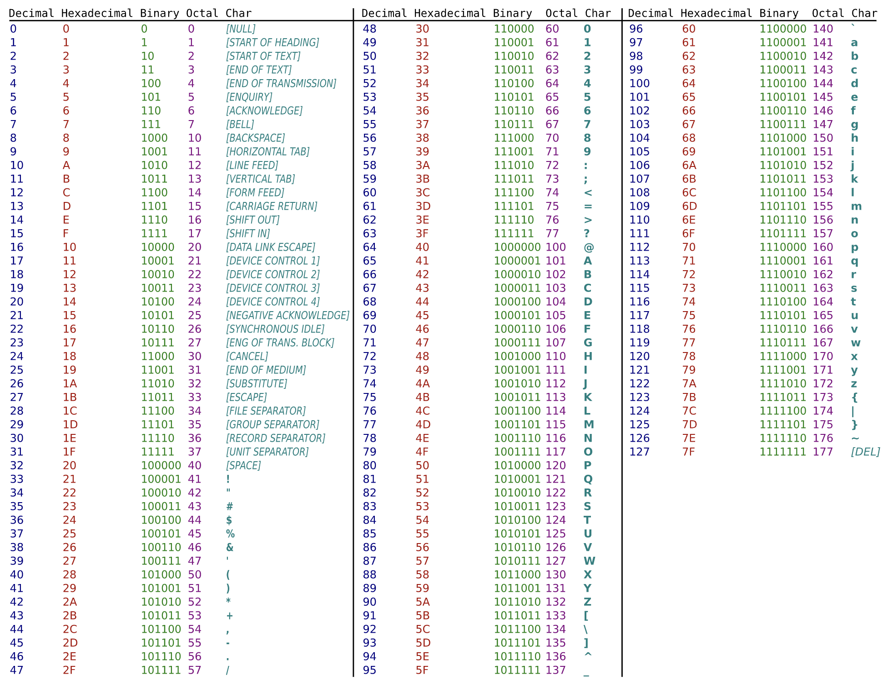
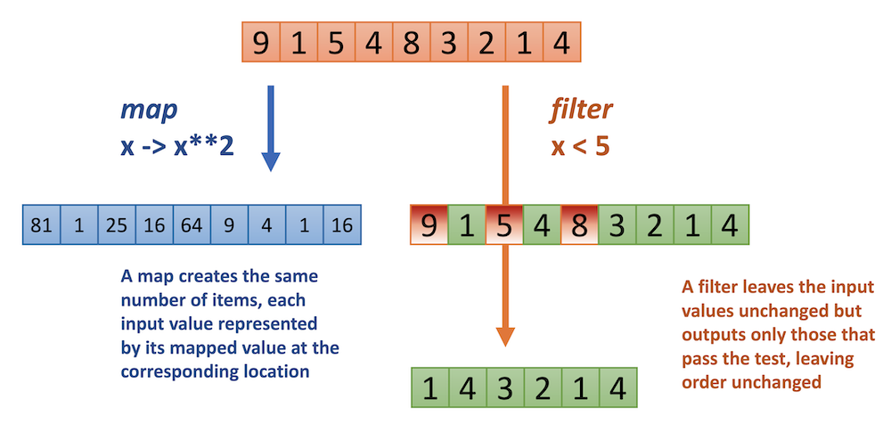

7. The core library functions#
Python ships with a wealth of built-in functions at your disposal.
Some are readily available but many should be “activated” using an import statement.
This chapter only deals with a very cursory inspection; your should really bookmark the docs.
7.1. Built-in functions#
The builtins are the functions you have always at your disposal, without import statement. The list is not very long because this keeps the core of Python lean.
The complete list can be found in the doc page on built-ins
The core contains “constructor functions” for all built-in datatypes - which we have already seen: bool(), dict(), float(), int(), list(), set(), str(), tuple() (some were not discussed and will neither be listed here)
Also already discussed or demonstrated were help(), input(), len(), max(), min(), range(), type()
There are some functions related to object-oriented programming (OOP): getattr(), setattr(), hasattr(), isinstance(), issubclass(), iter(), next(), staticmethod() that will be deiscussed in the chapter on OOP.
In the listing below only a very short description is given. For a few others a more detailed discussion is provided in the following sections.
abs()gives the absolute value of a number (i.e. removes the minus sign if present).dir()andvars()help you inspect the attributes available on a class, object or the current environment.sum()gives the sum of a numeric iterable.pow(a, b)calculates power of a to b (a^4)round()rounds a number to the given number decimal digits (or to the nearest integer of none provided)reversed()gives a reversed iterator of a sequence object. Can be inserted in a list or tuple constructor, or in a iteration control structure.zip()yields n-length tuples, where n is the number of iterables passed as positional arguments to zip(). The i-th element in every tuple comes from the i-th iterable argument to zip().
7.1.1. Get an iteration counter with enumerate()#
Used primarily in for loops to get hold of an iteration counter. It is a solution for the for(int i, i < length(seq), i++){} structure in other languages. The enumeration is wrapped around an iterable object such as string, list or other collection.
for (i, c) in enumerate("abcd"):
print(f'the number {i+1} letter of the alphabet is {c}')
the number 1 letter of the alphabet is a
the number 2 letter of the alphabet is b
the number 3 letter of the alphabet is c
the number 4 letter of the alphabet is d
7.1.2. Read and write files with open()#
The open() function gives an iterator of file contents when used in a read-only context. It is often used in conjunction with the for loop.
for line in open("data/employees.txt"):
print(line.strip())
employee_id;last_name;role
1;Jacobs;ict architect
2;Howard;programmer
3;Pierson;data scientist
The open() function comes with a few more parameters, of which only the mode is inetersting right now. It takes a string inidcating how the file should be opened. The default is "rt" which means the file is opened in read-only, text mode.
When you want to write to file these are the options at your disposal:
"x": Create - creates the file but returns an error if the file exists"a": Append - creates the file if the specified file does not exist and appends to the end"w": Write - creates the file if the specified file does not exist and overwrites if it does exist
fruits = ["kiwi", "apple", "guava"]
fruits_file = open("data/fruits.txt", "w") # overwrite mode!
for fruit in fruits:
fruits_file.write(f'this is a fruit: {fruit}\n') # the \n adds a newline
fruits_file.close()
The file fruits.txt now has this contents, no matter how often the snippet is run:
this is a fruit: kiwi
this is a fruit: apple
this is a fruit: guava
7.1.3. Converting between characters and ASCII/unicode#
Below the surface, characters are just numbers. Originally there were only 128 characters that could be encoded using a byte: the ASCII characters:

The pair of functions chr() and ord() can be used to convert characters to their numeric counterpart and vice versa. For instance,
print(chr(7))
will sound a ‘bell’ (but not in Jupyter unfortunately - give it a try in ipython).
The distinction between chr() and str() is: str() will give the string representation of a number (or any object for that matter) whereas chr() will give the character belonging to a numeric code.
test = "Some Text"
ords = []
letters = []
for letter in test:
print('{:<3} is encoded by {:<3}'.format(letter, ord(letter)))
S is encoded by 83
o is encoded by 111
m is encoded by 109
e is encoded by 101
is encoded by 32
T is encoded by 84
e is encoded by 101
x is encoded by 120
t is encoded by 116
7.1.4. Sorting with sorted() and list.sort()#
Sorting is quite ubiquitous in programming: give top-5 performing employees, sort countries on average income, sort members on last name, etc.
There are two functions available.
The built-in function
sorted()returns a sorted copy of the original listThe list method
sort()performs an in-place sort that modifies the original list
Both use natural ordering of text data (alphabetically) and numeric data (ascending) and both provide two customizing parameters: reverse and key.
fruits = ["kiwi", "apple", "guava"]
print(sorted(fruits))
print(fruits) # unchanged!
['apple', 'guava', 'kiwi']
['kiwi', 'apple', 'guava']
fruits = ["kiwi", "apple", "guava"]
fruits.sort()
print(fruits) # modified in-place
['apple', 'guava', 'kiwi']
Reversed sorting can be done using the function argument reverse=True|False
print(sorted([3, 2, 4, 1])) # default is reverse=False
print(sorted([3, 2, 4, 1], reverse=True))
[1, 2, 3, 4]
[4, 3, 2, 1]
numbers = [3, 2, 4, 1]
numbers.sort(reverse=True)
numbers
[4, 3, 2, 1]
7.1.4.1. The key parameter#
This parameter makes it possible to define custom sorting of collection types and objects. It takes as value a function that will return some property of each element to sort on.
For instance, suppose you want to sort a list of words on the second character:
def second_character_sorter(word):
return word[1]
sorted(fruits, key=second_character_sorter)
['kiwi', 'apple', 'guava']
7.1.5. Lambdas (optional)#
Lambdas
A lambda function is a small anonymous function that is usually locally defined. They can take any number of arguments but can only have a single expression.
The sorted() parameter key is most often used in conjunction with an anonymous type of function called a lambda. They are usually defined at the location where they are needed and have the form of
lambda <data>: <return property of data>
The above function could have been written as this lambda:
key=lambda fruit: fruit[1]
fruits = ["kiwi", "apple", "guava"]
sorted(fruits, key=lambda fruit: fruit[1])
['kiwi', 'apple', 'guava']
Here is another example, involving a list of dictionaries.
fruits = [
{'name': 'apple', 'color': 'green/red', 'origin': 'Europe'},
{'name': 'kiwi', 'color': 'green', 'origin': 'New Zealand'},
{'name': 'orange', 'color': 'orange', 'origin': 'Europe'},
{'name': 'banana', 'color': 'yellow', 'origin': 'Africa'}]
sorted(fruits, key = lambda fruit: fruit['origin'])
[{'name': 'banana', 'color': 'yellow', 'origin': 'Africa'},
{'name': 'apple', 'color': 'green/red', 'origin': 'Europe'},
{'name': 'orange', 'color': 'orange', 'origin': 'Europe'},
{'name': 'kiwi', 'color': 'green', 'origin': 'New Zealand'}]
7.1.5.1. Multi-key sorting#
Whenever you need sorting based on multiple properties - e.g. sorting first on family name and then on given name - you can employ the trick of tuple sorting.
If your ‘key’ function returns a tuple, then standard tuple sorting will be performed: on each consecutive element of the tuple.
persons = [{'first': 'Mark', 'last': 'Adams', 'age': 35},
{'first': 'Brad', 'last': 'Young', 'age': 64},
{'first': 'Rose', 'last': 'Berg', 'age': 51},
{'first': 'Julia', 'last': 'Adams', 'age': 28}]
def last_first_sort(person):
return (person['last'], person['first']) # returns a tuple with last and first name
sorted(persons, key = last_first_sort)
[{'first': 'Julia', 'last': 'Adams', 'age': 28},
{'first': 'Mark', 'last': 'Adams', 'age': 35},
{'first': 'Rose', 'last': 'Berg', 'age': 51},
{'first': 'Brad', 'last': 'Young', 'age': 64}]
7.2. Using filter() and map() (optional)#
These functions are used on collections, to filter the elements in them on some property, or to change each element or to swap them for something else. They represent important players in the filter-map-reduce functional programming paradigm.
For example, imagine a cupcake production line. There will be a machine taking in a plate of cupcakes and applying frosting to all of them: it maps a cupcake to a frosted cupcake. There will also be a machine taking in a plate of cupcakes, removing the badly formed ones: it filters the cupcakes, only letting the good ones pass.
map() applies a function (e.g. frosting) to all members of a collection, and returns the resulting collection, which is of course the same size as the original
filter() applies a function (e.g. scanning bad cupcakes) to all members of a collection, only keeping those members that pass the function (return True)
 Here follows an example of a map/filter chain. Note that both map and filter produce iterator objects that you usually need to embed in a collection constructor.
fruits = ["kiwi", "orange", "apple", "guava", "banana"]
def capitalize_name(fruit):
return fruit.capitalize()
list(map(capitalize_name, fruits))
['Kiwi', 'Orange', 'Apple', 'Guava', 'Banana']
fruits = ["kiwi", "orange", "apple", "guava", "banana"]
def filter_with_an(fruit):
return "an" in fruit
list(filter(filter_with_an, fruits))
['orange', 'banana']
Note that working with these functions is largely superceded by the use of comprehensions, which are outlined in the next chapter. I included these functions here for completeness’ sake, and because not everybody likes comprehensions.
7.3. Working with modules#
The core functionality of Python that is available to you once you start coding is rather small. That is because the deveolpers of the language wanted to keep the memory footprint as small as possible. Why load functionality if there is a significant possibility it will not be used?
To solve the footprint problem, most functionality in Python is put inside modules.
Modules
A Python module is a file containing code that can be imported into other modules, scripts or interactive sessions. A module can define functions, classes and variables. A module can also include runnable code.
A module allows you to organize and distribute your Python code. Grouping related code into a module makes the code easier to understand and use.
To make use of functionality (or data) within modules you need to import these. Here is a small example to illustrate.
import math
math.sqrt(16)
4.0
When you want to access data or functions within a module you need to use the module name, followed by the dot operator and then the function or data attribute name, as in math.sqrt()
To prevent having to type the module name all the time you can also specify which attributes of a module you want to import using the from <module> import <attr> syntax:
from math import ceil, floor
print(ceil(3.1222))
print(floor(3.567))
4
3
Or, alternatively, use from <module> import <attr> as <name> to use a different name than the one specified for/in the module itself:
from math import floor as fl
fl(3.9999)
3
To import everything from a module you use the asterisk:
from math import *
Be hesitant to do this because it clutters your global namespace.
Besides this, using the math.ceil() syntax makes it clear in which module the function was defined.
7.3.1. Using your own modules#
Whenever you create functionality that you want to reuse between scripts you can put those functions within a script and put this in the Python search path. This concept is out of scope for the course. The simplest way is to put it somewhere in a subfolder of your current project.
See RealPython for a discussion of this topic.
In the example below, the module is defined by file my_module.py located in folder ./scripts, the contents of which are:
'''
a simple module
'''
message = "Programming is for everyone"
def say_hello(name):
print(f"Hello {name}!")
from scripts import my_module
my_module.say_hello("Rob")
#or
# from scripts.my_module import say_hello
# say_hello("Mike")
print(help(my_module)) # use help to get info
Hello Rob!
Help on module scripts.my_module in scripts:
NAME
scripts.my_module - a simple module
FUNCTIONS
say_hello(name)
DATA
message = 'Programming is for everyone'
FILE
/Users/michielnoback/git_projects/python_intro/scripts/my_module.py
None
7.3.2. Core modules#
Besides the math module we have seen before Python ships with a wealth of other modles, each with their specific purpose and application domain. Here are just a few, and even less examples; have a look at The Python docs for a complete listing.
For all modules, importing them and typing help(module) is the best way to get detailed information.
module |
purpose |
|---|---|
time & datetime |
time and date manipulations |
math |
math data and functions |
os & os.path |
operating system interface |
sys |
interpreter acces |
itertools |
functions creating iterators for efficient looping |
csv |
cvs file reading and parsing |
pickle |
storing objects on disk |
shelve |
storing objects in a “dict on disk” |
7.3.2.1. Module sys#
This module is used for interacting with the interpreter, the Python system, not with the Operating System (see module os). Here are the main attributes and functions (copied from help):
Objects:
argv – command line arguments; argv[0] is the script pathname if known
stdin – standard input file object; used by input()
stdout – standard output file object; used by print()
stderr – standard error object; used for error messages
By assigning other file objects (or objects that behave like files) to these, it is possible to redirect all of the interpreter’s I/O.
Functions:
exit() – exit the interpreter by raising SystemExit
Example: using redirection of output stream. By providing a write() method you can redirect messages sent to the output stream, as in print(). First we need an interceptor:
class MyLogger:
def __init__(self):
self.log = ['My Logger\n']
self.msgCount = 0
def write(self, message):
if message == '\n':
return
self.msgCount += 1
self.log.append('[{}: {}]\n'.format(self.msgCount, message) )
Next we can use this to intercept, store and adjust print messages
import sys
print('start log test\n') ## to regular std out
myLog = MyLogger()
_out = sys.stdout ## store for later usage
sys.stdout = myLog ## redirect stdout to myLogger
print('a first message') ## print to myLogger
print('a second message')
sys.stdout = _out ## restore print to std out
print(''.join(myLog.log)) ## print myLog to std out
print('end log test')
start log test
My Logger
[1: a first message]
[2: a second message]
end log test
7.3.2.2. Modules os & os.path#
As stated, the os module is used to interact with the operating system, especially the file system. Here are some common use cases.
import os
print(os.getcwd()) #working dir - defaults to where the script lives
os.listdir()[:2] # list contents (only first two items)
/Users/michielnoback/git_projects/python_intro
['13_next_steps.ipynb', '07_comprehensions.ipynb']
Other os functions that are often used:
os.chdir(): change the current working directoryos.mkdir(path[, mode]): Create a directory named path (with unix mode). You can also create temporary directories; see tempfile moduleos.remove(path): Remove (delete) the file path. If path is a directory, an OSError is raised; see rmdir() below to remove a directory.os.rename(src,dst): Rename the file or directory src to dstos.system(command): Execute the command (a string) in a subshell
Some os.path goodies
os.path.sep: The character used by the OS to separate pathname components: ‘/’ (Linux) or ‘' (Windows)os.path.exists(path): True if path refers to an existing pathos.path.isfile(path): True if path is an existing regular fileos.path.isdir(path): True if path is an existing directoryos.path.split(path): a split pathname into a pair (head, tail) where tail is the last pathname component and head is everything leading up to itos.path.join(path1[, path2[, ...]]): an intelligently joined set of components
import os.path as path
print(path.split(os.getcwd()))
print(path.join("Downloads", "data", "project1"))
('/Users/michielnoback/git_projects', 'python_intro')
Downloads/data/project1
7.3.2.3. The itertools module#
Module itertools provides functions that create iterators for efficient looping. Here are a few:
import itertools as it
print(it.repeat(42, 5)) # prints the type and properties, not the data
print(list(it.repeat(42, 5))) # need to wrap it in collection type or loop it
print(list(it.product([1,2,3],['a', 'b'])))
print(list(it.accumulate([2, 4, 6])))
repeat(42, 5)
[42, 42, 42, 42, 42]
[(1, 'a'), (1, 'b'), (2, 'a'), (2, 'b'), (3, 'a'), (3, 'b')]
[2, 6, 12]
7.3.2.4. Module csv#
Text files with the csv format are quite ubiquitous in data science.
Of course, you can write your own parser for every file type, which is not difficult of course, but you can make it even easier for yourself. Just use module csv!
Here, I present some examples for reading csv files. Remember that writing is just as easy!
As example, see the input file data/exp_data.csv:
exp,value,message
1,0.567,OK
2,0.334,OK
3,0.325,ND
4,0.766,OK
5,0.455,OK
6,0.421,ERR
7,0.876,OK
Let’s look at how to process this.
import csv
with open('data/exp_data.csv') as csv_file:
csv_reader = csv.reader(csv_file, delimiter=',')
for row in csv_reader:
print(row)
['exp', 'value', 'message']
['1', '0.567', 'OK']
['2', '0.334', 'OK']
['3', '0.325', 'ND']
['4', '0.766', 'OK']
['5', '0.455', 'OK']
['6', '0.421', 'ERR']
['7', '0.876', 'OK']
Alternatively, you can get an iterator of dictionaries where the first line in the file is assumed to be a header line
with open('data/exp_data.csv') as csv_file:
csv_reader = csv.DictReader(csv_file, delimiter=',')
for row in csv_reader:
print(row)
{'exp': '1', 'value': '0.567', 'message': 'OK'}
{'exp': '2', 'value': '0.334', 'message': 'OK'}
{'exp': '3', 'value': '0.325', 'message': 'ND'}
{'exp': '4', 'value': '0.766', 'message': 'OK'}
{'exp': '5', 'value': '0.455', 'message': 'OK'}
{'exp': '6', 'value': '0.421', 'message': 'ERR'}
{'exp': '7', 'value': '0.876', 'message': 'OK'}
7.3.2.5. The pickle module#
Python can write any data structure and objects into a file and read it again out of that file. This is done using the pickle module.
This is a very useful feature if -for example- you want to store program state for a next run. Here is a simple example.
import pickle
my_preferences = {'linewidth': 60, 'verbosity': 'HIGH'}
with open('data/preferences', mode='bw') as dmp: #write to bniary mode
pickle.dump(my_preferences, dmp)
# don't try to read the file - it is binary
with open('data/preferences', mode='rb') as dmp: #read from binary mode
loaded_prefs = pickle.load(dmp)
print(loaded_prefs)
{'linewidth': 60, 'verbosity': 'HIGH'}
7.3.2.6. The shelve module#
Related to the pickle module is the shelve module.
It is generally used to store data in a database-like structure.
The difference is you do NOT have to load the entire data structure every time you want to access a single item of it.
Here is a first run of the script: it stores three users.
When you call open() on a non-existing shelve, one is automatically created.
With the example below, a binary filed named users.db is created.
import shelve
users = shelve.open("data/users")
users['Mich'] = dict(name='Michiel', access='ALL')
users['Piet'] = dict(name='Piet', access='EDIT')
users['Sven'] = dict(name='Sven', access='NONE')
print(users['Mich'])
users.close()
{'name': 'Michiel', 'access': 'ALL'}
Now do an update, and a read operation; imagine this is in another shell or script:
new_users = shelve.open("data/users")
new_users['Arne'] = dict(name='Arne Poortinga', access='MIN')
print(new_users['Mich'])
print(len(new_users)) # 4 users in the database now
{'name': 'Michiel', 'access': 'ALL'}
4
7.3.2.7. JSON#
Although pickle and shelve are convenient, With serious applications JSON is the way to go. There are many libraries and programming languages with integrated support for json, and stored files are human-readable as well. This is outside the scope of this course.
Have a look at the json module
7.4. Key concepts#
Important
lambda: A lambda is an anonymous locally-defined function, an inline executable statement.
filter-map-reduce: Map, Filter, and Reduce are paradigms of functional programming. See here for more details.
module: A module is a file containing code that can be imported into other modules, scripts or interactive sessions. A module can define functions, classes and variables.